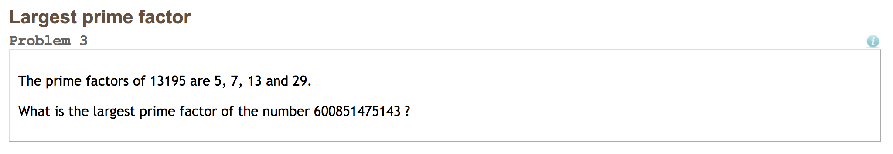
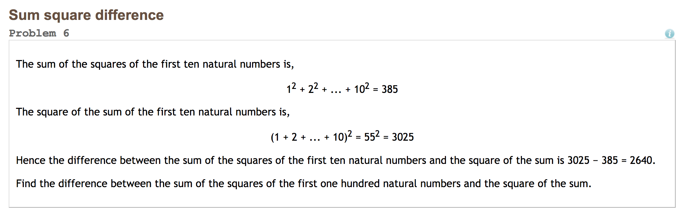
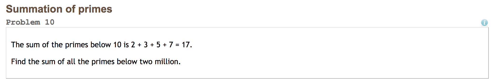

Created: 2019-06-24 Mon 10:02
Consider:
def add(x, y):
return x + y
Answer:
add(x, y)
But first…
% operator3 % 44 % 44 % 5'a' % 1divisible_by(x, y)
True if x is divisible by y, False if notnum_factors(x)
x hasis_prime(x)
True if x is prime, False if notTo test the functions, please see below:
divisible_by(10, 2) # Should return True
divisible_by(10, 3) # Should return False
num_factors(4) # Should be 3
num_factors(5) # Should be 2
is_prime(3) # Should be True
is_prime(6) # Should be False
divisible_by(x, y)You probably have something like:
def divisible_by(x, y):
if (x % y == 0):
return True
else:
return False
But you could also have:
def divisible_by(x, y):
if (x % y == 0):
return True
return False
Or even:
def divisible_by(x, y):
return x % y == 0
num_factors(x)You may have something like this:
def num_factors(x):
i = 0
num_factors = 0
while i <= x:
if divisible_by(x, i):
num_factors += 1
i += 1
return num_factors
How about something like this:
def num_factors(x):
num_factors = 0
for i in range(1, x + 1):
if divisible_by(x, i):
num_factors += 1
return num_factors
is_prime(x)You probably have something like this:
def is_prime(x):
if num_factors(x) == 2:
return True
return False
But you could also have:
def is_prime(x):
return num_factors(x) == 2
Let's review
average(l)
has_prime(l)
True if the list has a prime number, False if notcontains(l, e)
True if l contains e, False if notTo test the functions, please see below:
l_one = [1, 3, 5, 7, 9]
l_two = [4, 6, 8, 10, 12]
average(l_one) # Should be 5
average(l_two) # Should be 8
has_prime(l_one) # Should be True
has_prime(l_two) # Should be False
contains(l_one, 5) # Should be True
contains(l_two, 5) # Should be False
average(l)Seems familiar?
You may have something that looks like this:
def average(l):
current_sum = 0
for e in l:
current_sum += e
return current_sum / len(l)
You could also have used something like:
def average(l):
return sum(l) / len(l)
has_prime(l)You may have something that looks like this:
def has_prime(l):
has_prime_num = False
for e in l:
if is_prime(e):
has_prime_num = True
return has_prime_num
You could also have used something like:
def has_prime(l):
for e in l:
if is_prime(e):
return True
return False
contains(l, e)You may have something that looks like this:
def contains(l, e):
for elem in l:
if elem == e:
return True
return False
You could also have used something like:
def contains(l, e):
i = 0
while i < len(l):
if l[i] == e:
return True
i += 1
return False
Or, how about something like this:
def contains(l, e):
return e in l
Try this one out:
count_evens(l)) which returns the number of even ints in the given array.Use the following to test:
count_evens([2, 1, 2, 3, 4]) # Should be 3
count_evens([2, 2, 0]) # Should be 3
count_evens([1, 3, 5]) # Should be 0
count_evens(l)Hmmmmm, how about something like this?
def count_evens(l):
num_evens = 0
for e in l:
if e % 2 == 0:
num_evens += 1
return num_evens
def is_even(n):
return n % 2 == 0
def count_evens(l):
num_evens = 0
for e in l:
if is_even(e):
num_evens += 1
return num_evens
First predict, then try, then analyze…
l = [0, 7, 3, 4, 5, 2, 1]list[-1], list[-2]list[0:2], list[1:3]list[:2], list[2:]Reading and writing to files. https://github.com/roddajohn/hypothekids
.csv is?Some work…
split() do?join()?split() and join()Here's an example:
string_to_parse = 'name,email,age,birthday'
parsed_on_comma = string_to_parse.split(',')
print(parsed_on_comma)
recombined = ','.join(parsed_on_comma)
print(recombined)
string_to_parse?parsed_on_comma?recombined?parsed_on_comma.split('') return?
File: data1.csv
A snippet:
file_contents = open('data1.csv').read()
lines_as_array = file_contents.split('\n')
The file looks like this:
| Name | Age | Birthday | |
|---|---|---|---|
| random name | random email | -1 | 08/16/1999 |
file_contents = open('data1.csv').read()
lines_as_array = file_contents.split('\n')
for line in lines_as_array:
if line == '':
continue
split_data = line.split(',')
print ('Name: ' + split_data[0] +
', email: ' + split_data[1] +
', age: ' + split_data[2] +
', birthday: ' + split_data[3])
print ('Read ' + str(len(lines_as_array)) + ' people')
File data2.csv
File looks like:
| ID | XCORD | YCORD | ZCORD | DX | DY | DZ |
|---|---|---|---|---|---|---|
| 1 | 1 | 2 | 3 | 1.43 | 2.87 | -918 |
| 2 | 7 | 6 | 3 | -1.2 | 2.67 | 713 |
xcord, average ycord, average zcord, etcf = open('data2.csv').read().split('\n')
sums = [0, 0, 0, 0, 0, 0, 0]
for line in f:
split = f.split(',')
i = 0
for i in range(len(split)):
sums[i] += split[i]
i = 0
for i in range(len(sums)):
print(str(i) + 'th index avg is: ' + str(sums[i] / len(f)))
def mpoint(x1, y1, z1, x2, y2, z2, x3, y3, z3):
return [(x1 + x2 + x3) / 3,
(y1 + y2 + y3) / 3,
(z1 + z2 + z3) / 3]
f = open('data2.csv').read().split('\n')
i = 0
for i in range(len(f) - 2):
split1 = f[i].split(',')
split2 = f[i + 1].split(',')
split3 = f[i + 2].split(',')
mpoint = mpoint(int(split1[1]), int(split1[2]), int(split1[3]),
int(split2[1]), int(split2[2]), int(split2[3]),
int(split3[1]), int(split3[2]), int(split3[3]))
print ('Mpoint: (' + str(mpoint[0]) + ', ' + str(mpoint[1]) + ',' + str(mpoint[2]))
Euler #3 
 